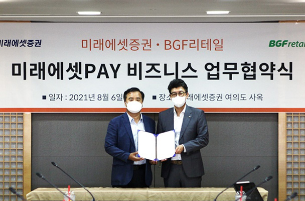

연혁
BGF리테일은 소매 유통을 넘어 제조, 물류, 금융서비스 등 시너지를 발휘하는 기업으로 성장하기 위해 노력하고 있습니다.
2011 ~ 현재
혁신
-
- 2021
- 04CU 말레이시아 1호점 오픈
- 01CU, 업계 최초 무라벨 PB 생수 출시
-

-
- 2020
- 12CU, 업계 최초 친환경 봉투 전격 도입
- 07BGF리테일-한국무역협회 해외진출 MOU 체결
-
- 2019
- 12BGF리테일, 무역의 날 100만불 수출탑 등 3관왕 수상
- 12경찰청-BGF그룹, 2019 아동안전 시민상 시상식 개최
- 09CU, 베트남 'CUVN'과 마스터 프랜차이즈 계약(MFC) 체결
- 
-
- 2018
- 11진천 CDC물류센터 그랜드 오픈
- 10BGF '대한민국 범죄예방 대상' 기업사회공헌부문 수상
-
- 2017
- 10제2회 대한민국 범죄예방대상 국무총리 표창 수상
-
- 2016
- 12소비자중심경영(CCM) 재인증 취득
- 11업계 최초 대한민국 디자인대상 수상
-
- 2015
- 11상품연구소 개소
- 09업계 최초 9천점 달성
-
- 2014
- 05BGF리테일, 유가증권시장 상장
-
- 2013
- 12업계 최초 녹색물류기업인증 취득
-
- 2012
- 12업계 최초 소비자중심경영(CCM) 인증
2001 ~ 2010
성장
-
- 2010
- 11훼미리 F&B, HACCP 인증
- 08업계 최초 5천점 달성
- 03업계 최초 그린스토어 1호점 개점
-
- 2009
- 09친환경 소비 탄소 캐쉬백 적립 서비스 시행
- 08업계 최초 이동형 편의점 출점
-
- 2008
- 11한국물류대상 수상
- 10업계 최초 4천점 달성
-
- 2007
- 08업계 최초 연중무휴 24시간 고객만족센터운영
- 05유통기한체크 TIME-PLU 시스템 도입
-
- 2005
- 08업계 최초 3천점 달성
-
- 2004
- 12북한 개성공단지구 진출
-
- 2003
- 10업계 최초 2천점 달성
-
- 2002
- 11북한 금강산 관광특구 진출
- 11점포수 업계 1위 달성
-
- 2001
- 10업계 최초 제주 지역 출점 (전국 네트워크 완성)
- 10전용 도시락 공장(훼미리푸드) 설립
1989 ~ 2000
시작
-
- 2000
- 07호남 지역 진출
-
- 1997
- 09공공요금 수납대행 서비스 개시
-
- 1996
- 02영남물류센터 준공
-
- 1994
- 12(주) 보광훼미리마트 설립
-
- 1993
- 09경인물류센터 가동
- 06대전 지역 진출
- 02대구 지역 진출
-
- 1992
- 11점포수 업계 1위 달성
- 10부산물류센터 가동
- 04영남 지역 진출
- 01국내 최초 편의점 전용 물류센터(서울물류센터) 가동
-
- 1990
- 101호점 가락시영점 개점
-
- 1989
- 10CVS(편의점) 사업부 발족